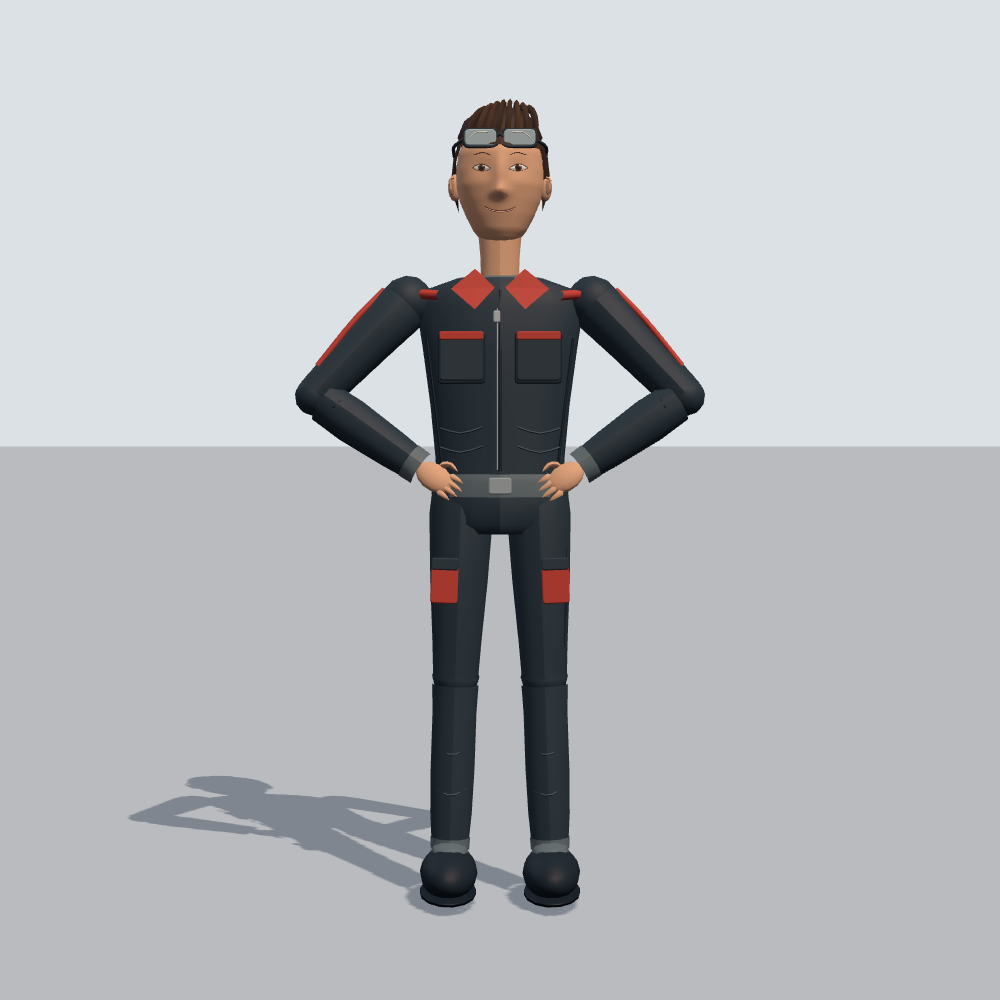
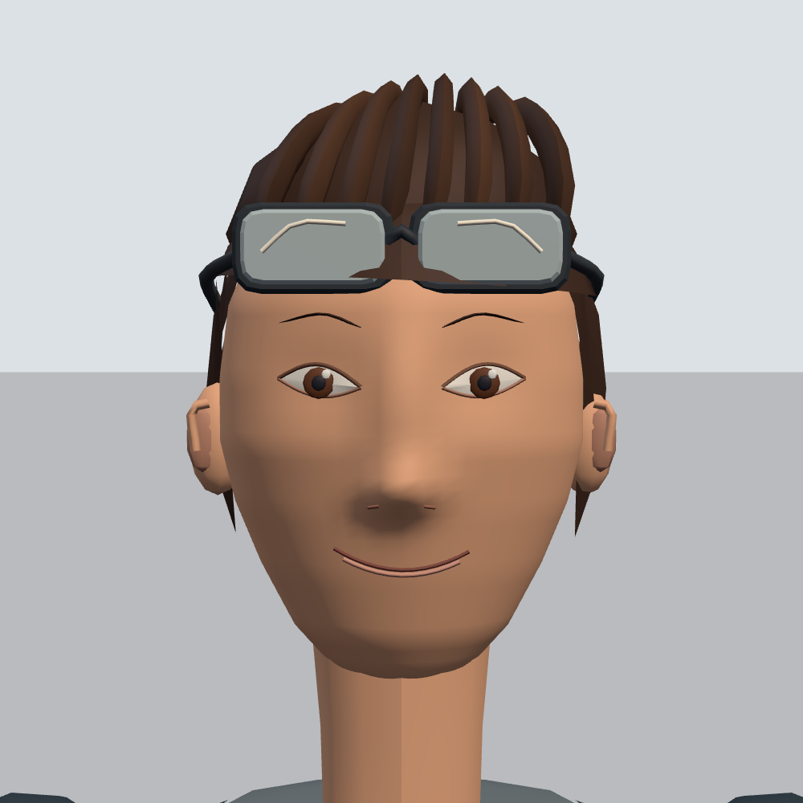
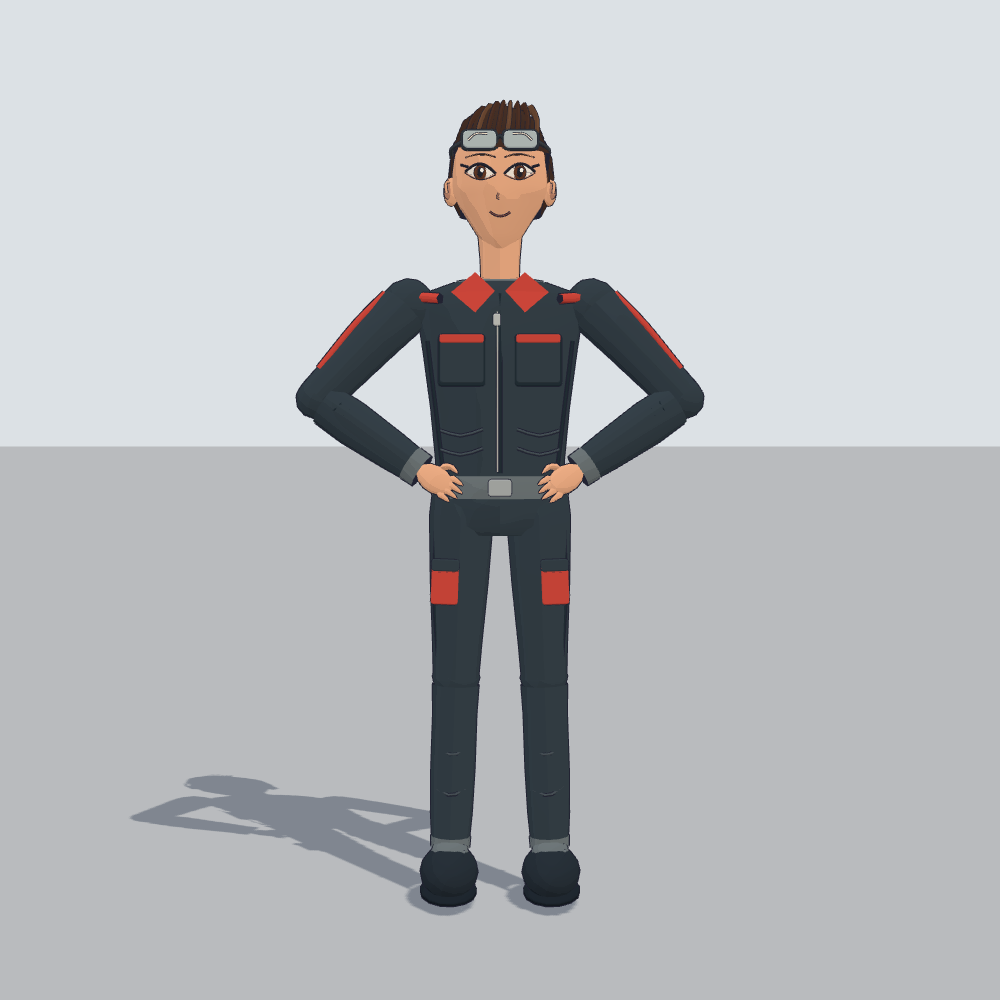
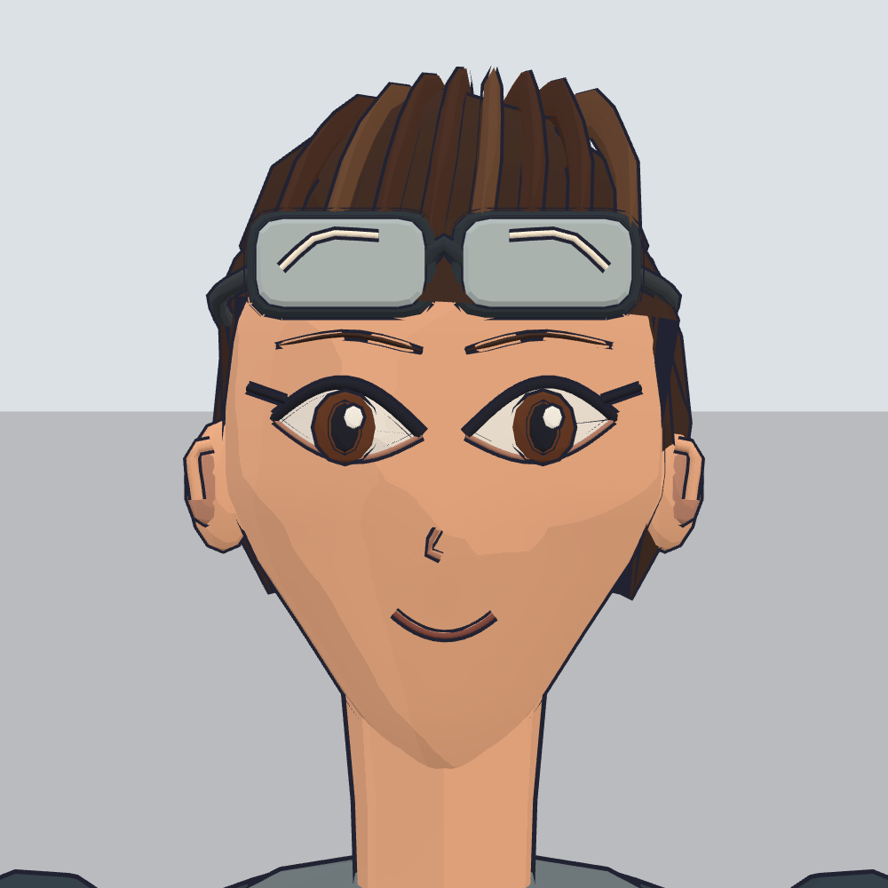

Nevo’s supplied picture
Identity and factory-outfit reference

 Dark coveralls, red trim, brown quiff and safety goggles. No lettering on either model.
Dark coveralls, red trim, brown quiff and safety goggles. No lettering on either model.A / Semi-realistic
Natural eye size, nose bridge and softer lighting


5.48 heads tall15,762 trianglesMore natural proportions; reads older than the picture.
B / Anime
V-shaped jaw, large eyes and cel-shaded outline


5.15 heads tall24,708 triangles incl. outlineStronger eye read; deliberately graphic facial styling.